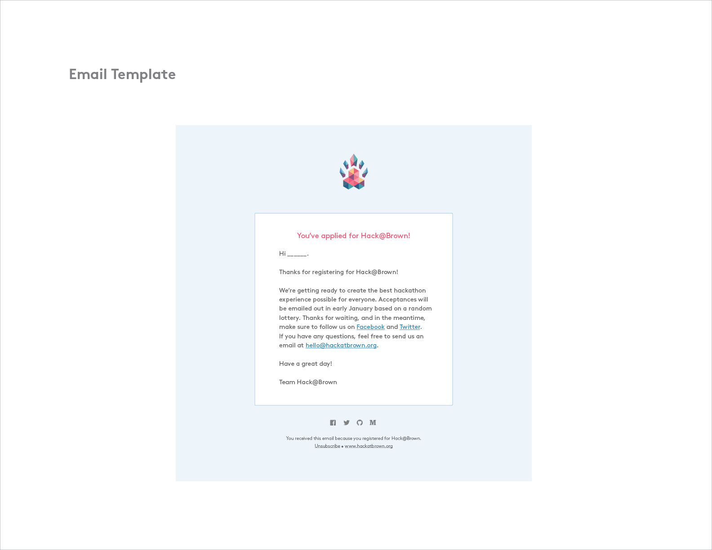

Hack@Brown
Digital, Identity
Hack@Brown is Brown University's annual student hackathon.
Hack@Brown's mission is to empower everyone to learn and build great things. We're driven by the core ideals of diversity, inclusivity and mentorship. We aim to build a fun-loving community at Brown surrounding learning, building, and sharing knowledge. Our brand identity illustrates the idea of interconnectivity, multiplicity and cultivation.
Context
Hack@Brown is built on the inherent goal of focusing on the student experience. Instead of aiming to be a hardcore, competitive, data driven event, we present ourselves as an inclusive space that encourages making, tinkering and learning. It's important that the team adopts an consistent and congruous image to do so, and that's where the rest of the design team and I step in. This year's design team includes Chen Ye, Kevin Cadena, Marlena Morshead and Dave Lee.
Goals
Work within a small and agile team to conceive and establish a visual brand identity and ship all assets within 1-2 months prior to the event. As a designer, my duties encompass print, digital, interaction and promotional work. I am responsible for making sure that all of our applications appear cohesive and have the same voice.
Process
Initially, it was arduous to settle on a unified visual language given that our team members have contrasting design styles. The only starting point we had was the previous year's logo. Even the logo proved to be a challenge, since we had to strike a middleground between a soft look and angular form. The driving force for us was to focus on our end user and audience. We design for the students.
Branding Guide
I compiled a visual branding guide that would set the standards of our image as well as show applications in place. Below are samples taken from the guide.

Website & Registration
Reflection
Hack@Brown, hands down, has been my most work intensive extracurricular commitment. Each team meeting is characteristic of a mini hackathon session. My experiences pushed me to think fast and prioritize shipping over perfection. I learned a lot in terms of collaborating and unifiying a design system, and I'm excited to see where the future design is headed! I couldn't be happier with the Hack@Brown 2015 team, and a special thanks for co-directors Sharon Lo and Atty Reddy for being so supportive!